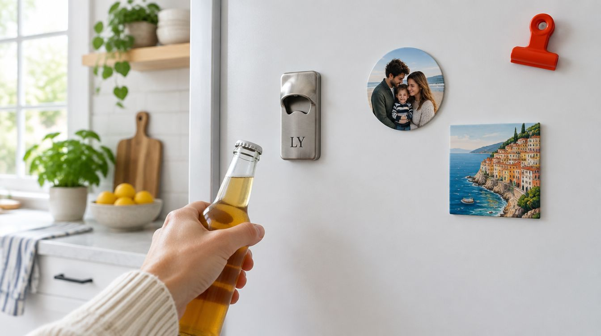

Bar, restoran ve içecek bayisi için logolu promosyon açacak; yeni ev, düğün ve tatil hatırası olarak kişiye özel magnet açacak. Fotoğraflı magnetle set hâlinde.

Magnetli kapak açacağı, promosyon ürünleri arasında en uzun ömürlü olanı: buzdolabına yapışıyor ve yıllarca orada kalıyor. Çekmecede kaybolan kalem ya da cepten düşen çakmaktan farkı bu. Mutfakta her gün göz önünde olduğu için tasarımın sade ve okunur olması gerekiyor.
Metal gövdeye tek renk ya da tam renkli baskı yapıyoruz; fotoğraflı yuvarlak ve kare magnetlerle set hâlinde de üretiyoruz.
Kurumsal tarafta en doğal müşteri içecekle ilgili işler: bar, pub, restoran, kafe, içecek toptancısı ve bayisi, şarap ve bira üreticisi, tekel bayii. Açacak müşterinin mutfağına giriyor, logo her akşam görünüyor. Otel ve tatil köyleri için oda hatırası, emlak ve mobilya firmaları için “yeni eve hoş geldin” hediyesi olarak da kullanılıyor.
Logo ile birlikte Instagram adı ya da telefon sığıyor; adede göre üretim, tekrar siparişte aynı gövde ve dosya.
Kişiye özel açacak hediye olarak iki yerde çalışıyor: yeni ev (isim, adres numarası, taşınma tarihi) ve hatıra (düğün tarihi, tatil karesi, aile fotoğrafı). Açacağın yanına aynı tasarım dilinde fotoğraflı magnet ekleyince buzdolabı kapısında küçük bir set oluşuyor.
Düğün ve nişanda misafire verilen tarihli magnet açacak, bekarlığa veda için grup çizimli açacak da sık gelen işler; misafir sayısına göre üretiliyor.
Ürün: çelik gövdeli magnetli açacak (dikdörtgen ve oval), arkasında güçlü mıknatıs; fotoğraflı yuvarlak ve kare magnetler.
Baskı: metal yüzeye tek renk ya da tam renkli; fotoğraf ve logo; magnetlerde tam renkli fotoğraf.
Bakım: suya ve mutfak ortamına dayanıklı; keskin cisimle çizilmedikçe solmuyor.
Dikdörtgen mi oval mi, yanında magnet var mı, kaç adet.
Logo ya da fotoğraf açacağın ölçüsüne göre kuruluyor; ürün üstünde ekranda gösteriliyor.
Onaydan sonra basılıyor; ilk parça kontrol ediliyor.
Kutulu ya da toplu poşetli; magnet setiyle aynı pakette.
Tutar; arkasındaki mıknatıs gövdeyi ve açılan şişeyi taşıyacak güçte. Paslanmaz olmayan yüzeylerde (bazı yeni nesil kapılar) tutmuyor, bunu baştan söylüyoruz.
Basılır; dikdörtgen gövdede yatay fotoğraf iyi duruyor. Fotoğrafı ayrı magnet olarak yanına eklemek çoğu zaman daha iyi sonuç veriyor, ikisini de gösteriyoruz.
Olur; aynı logo farklı zemin renklerinde ya da birkaç farklı slogan aynı siparişte basılabiliyor.
Evet; tarih ve isimlerle, istenirse her masaya farklı renkte. Teslim süresi adede göre söyleniyor.
Olur. Açacak ve iki-üç magnet tek kutuda, kurdele ve not kartıyla.
İletişim
Logoyu ya da fotoğrafı gönderin; açacak ve magnet setini aynı gün gösterelim.